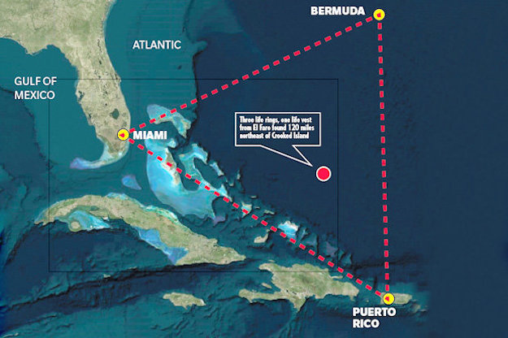
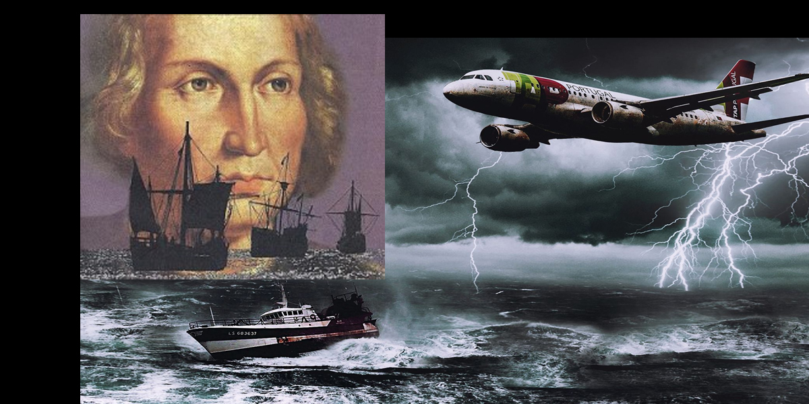
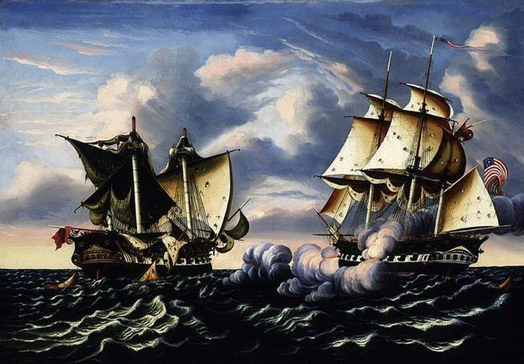
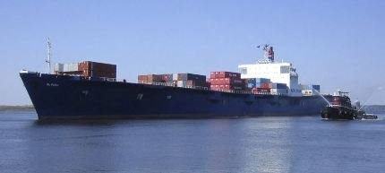

People believe that the cause of the Bermuda Triangle disappearances is because of Atlantis is laying down in the the surrounding area, and the technology they have interferes with our technology and cause planes to crash down. After the plane crashes then they people go into the water, atlanteans help them and they live there.
In hopes of recovering from her loss, Theodosia decided to sail to New York to visit her father. On the last day of 1812 she boarded the schooner Patriot in South Carolina. The ship left dock and sailed north.It was never seen again.Although all of the crew and the passengers disappeared, the vanishing of Theodosia is the one that people still talk about today. Numerous theories have been put forward as to what happened to the 29-year-old member of high society.
There has been many stories that Columbus and his crew saw a bright object rise up out of the ocean and fly into the sky, usually with only just key words quoted from the passage to emphasize the weirdness of the light but also to disguise the direction the light was seen to travel. Columbus had an issue with his compass during the voyage, a problem that has come to be used in two intriguing ways to support theories of both the Bermuda Triangle and of UFOs; but first, let's look at the original report.
The captain of the Ellen Austin sent some of his prize crew on board this ship. When the crew boarded the ship, they in fact confirmed that there was not a single soul on board. The captain of Ellen Austin ordered the crew to guide the ship so that they could all sail together to New York. After two days, the two ships got separated by a huge sea storm. And when the storm subsided, the unnamed ship was gone and never seen again. Yes, the mystery of the ship is still being explored. The crew and the unknown ship could never be traced again. However, in 1944, a retired British navy officer, Commander Gould wrote about this incident. In his article, he mentioned that the ship was actually found again by the Ellen Austin, but again like last time, there was no one on board. And the ship was sailing erratically. The crew were also gone.
SS El Faro was a 790-ft large cargo ship. On its ill fated voyage, it started sail from Jacksonville (Florida) bound for Puerto Rico towards east. So the route was right on the middle of Bermuda Triangle. On the day of its departure, a tropical storm called Joaquin was reported. But it was hundreds of miles away on the east. Such storm is common around this time of the year and can easily be negotiated by ships of this class. The route charted out for the ship would anyway clear past the path of the storm by about 100 miles, so it was not considered any kind of threat by the captain. But the mother nature seems to have had other ideas. This is one of the most recent and tragic incidents of Bermuda Triangle, and the worst in 33 years.
{kind=link}